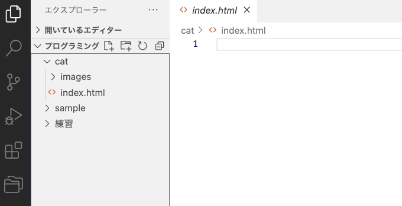
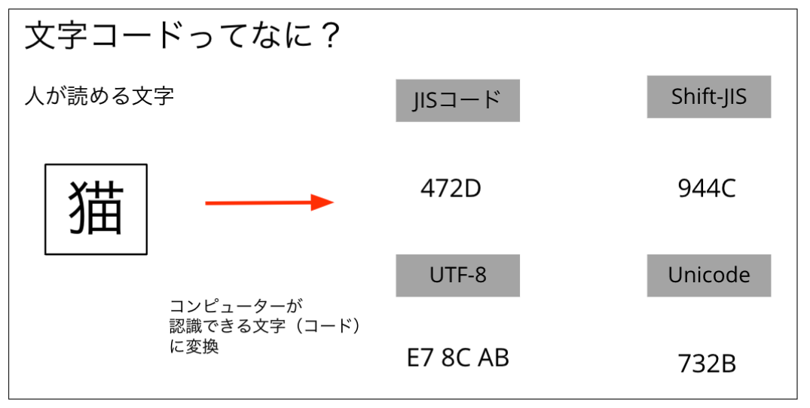
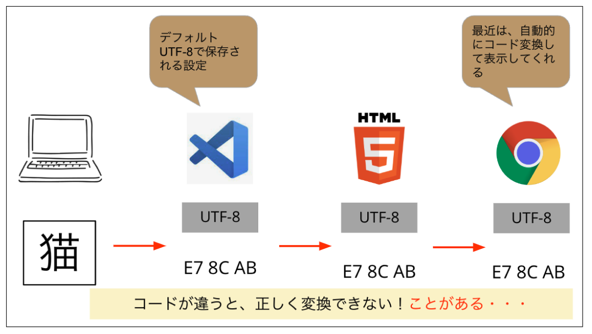
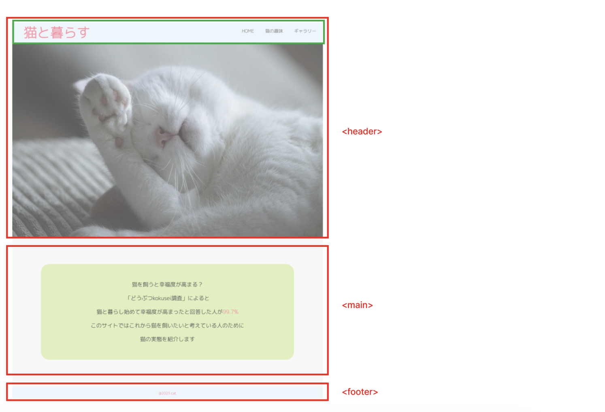
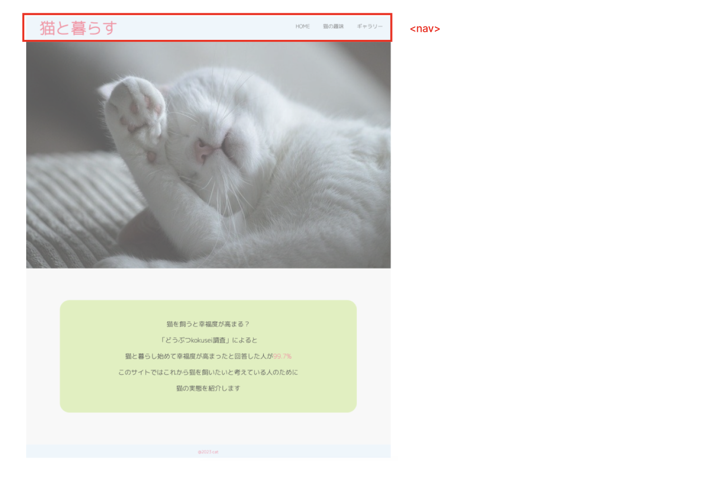
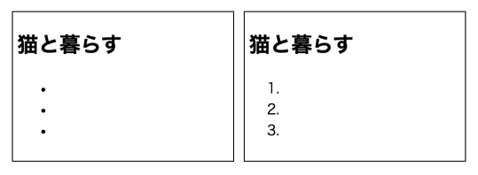
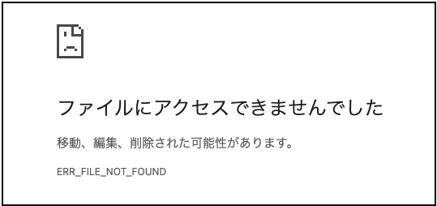
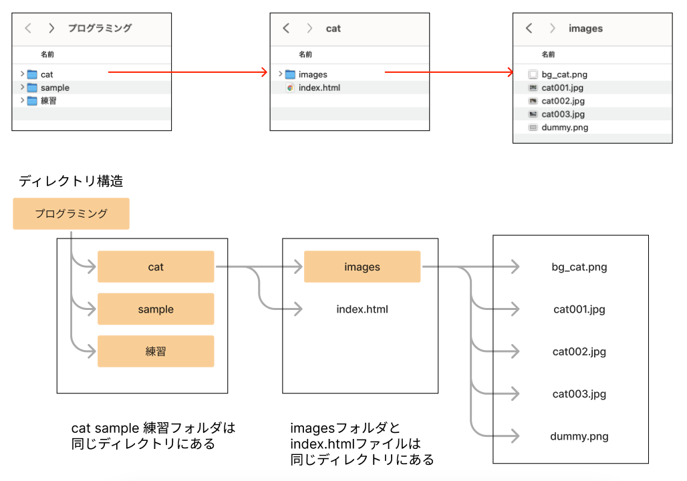
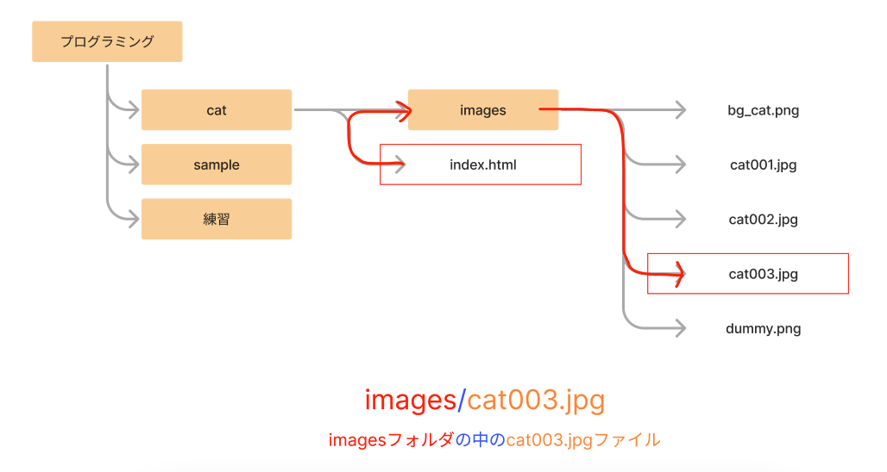
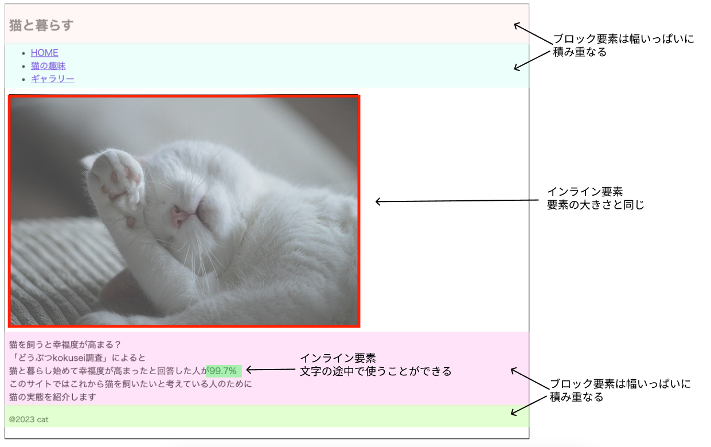

03_TOPページのHTML（index.html）
TOPページのHTMLを書いてみよう
サンプルプログラムのダウンロード
[サンプルプログラム]>sample.zip
[プログラミング]>の中に展開
ファイル・フォルダ作成(復習)
[プログラミング]の中に[cat]>フォルダ作成
[プログラミング]>[cat]の中に[images]フォルダ作成(画像を入れる場所)
[プログラミング]>[cat]の中にindex.htmlファイルを作成
命名規約 トップページのファイル名（P53）
拡張子
半角英数字
トップページは必ず「index.html 」
HTMLの書き方
[プログラミング]>[sample]>[html]>01_index.htmlを横並びに表示
タグの書き方 開始タグ 終了タグ
VSCode予測入力をうまく使う
インデント
基本構造（P54）
文字コード
 グループ化(02_index.html)
ヘッダー部分(03_index.html)
ナビゲーション<nav>
見出し<h1>
リスト<ul>
<ol>に変えるとどうなる
un ordered list
ordered list
リンク(04_index.html)
<a>
飛び先のファイルがないとエラーになる
メインビジュアル(05_index.html)
[sample]>[images]の中の画像ファイルを[cat]>[images]にコピー
画像<img>
パスの考え方
 メインエリア(06_index.html)
文字<p><br>
<span>
インライン要素・ブロック要素（<span>を<div>に変えるとどうなる）
<strong><small>に変えてみよう
<img><a>もインライン要素
